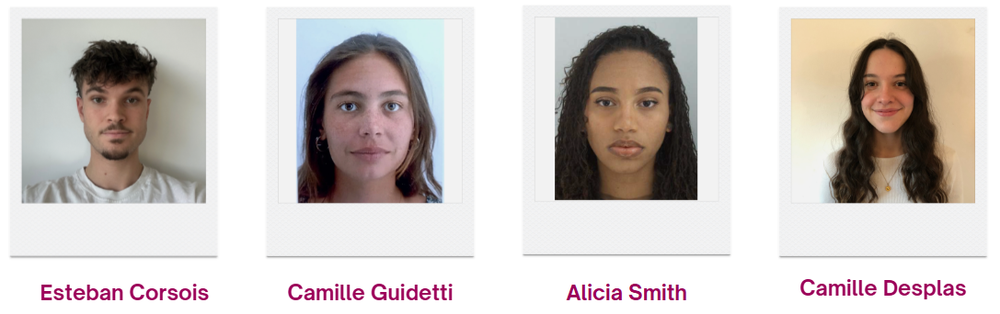

Bienvenue !! Vous allez tout découvrir sur les Ombres Sensibles
Qui sommes-nous ?
Bonjour à tous ! Nous sommes des étudiants de première année à l'École Nationale Supérieure de Cognitique
(ENSC).
Notre équipe est composée de quatre étudiants. De plus, notre cliente et tutrice tout au long de ce projet
était Madame Lespinet-Najib Véronique.

Notre Équipe
Qu'est-ce qu'une Ombre Sensible ?
Nous avons défini « Ombres Sensibles » comme tout type de handicap invisible.
Il en existe de nombreux exemples (l'autisme, les troubles dys…).
Pour illustrer ce concept, nous avons choisi la Schizophrénie.
La schizophrénie est une maladie psychique chronique complexe qui se traduit schématiquement par : une
perception perturbée de la réalité ; des manifestations productives (idées délirantes ou hallucinations) et
passives (isolement social et relationnel).
600 000 personnes en France sont atteintes de schizophrénie. De plus, cette maladie subit souvent de
nombreux préjugés (« ils sont fous… »), c'est pour cela qu'il nous a semblé important de travailler
sur ce sujet afin de sensibiliser.
Pour ce projet, nous avons donc plusieurs objectifs :